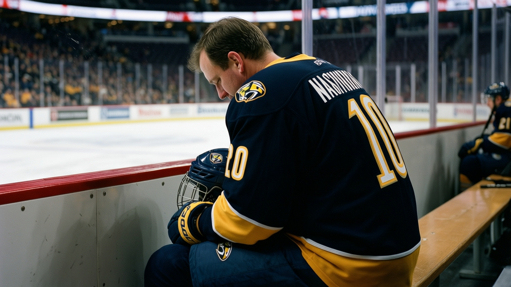

Sources: The Signing-Injury Pattern Just Hit a Team on a 7-Game Win Streak 🔥
Orszagh signed for $181,620 on December 12. The IR list says leg, onset between the 15th and the 17th, back January 8. Nashville is 40 points deep and three men short on the list.
 E.J. "Ears" CallahanInsider · The Hot Stove
E.J. "Ears" CallahanInsider · The Hot Stove

The signing-injury pattern continues into a winning team's roster

 Vladimir Orszagh79 [747] signed with
Vladimir Orszagh79 [747] signed with  Nashville Predators on December 12 for $181,620. The league's injury list places his onset between December 15 and December 17. Return date: January 8. The body part is a leg.
Nashville Predators on December 12 for $181,620. The league's injury list places his onset between December 15 and December 17. Return date: January 8. The body part is a leg.
The Predators are on a 7-game win streak. They sit at 40 points in 30 games with a cost per point of $1.17M, the third-lowest in the league. Their morale average is 95.1, second only to  Tampa Bay Lightning at 96.0. A team that is winning while short.
Tampa Bay Lightning at 96.0. A team that is winning while short.
Of the 5 signings filed since the last edition, 2 are now on the shelf. Orszagh and  Jason Allison83 [12] in
Jason Allison83 [12] in  Los Angeles Kings both carry onset windows that fall between December 15 and December 17. Both signed on December 12. The pattern we flagged two weeks ago, 6 of 12 December signings hitting IR in a 4-day span, has not stopped. It has moved.
Los Angeles Kings both carry onset windows that fall between December 15 and December 17. Both signed on December 12. The pattern we flagged two weeks ago, 6 of 12 December signings hitting IR in a 4-day span, has not stopped. It has moved.
The streak is real. The roster move was not.
 Greg Johnson82 [445] has been out since before December 1 with a neck.
Greg Johnson82 [445] has been out since before December 1 with a neck.  Oleg Tverdovsky81 [1022] went down with an arm between December 8 and December 11, back January 10. Add Orszagh's leg and the Predators are three men short on the list.
Oleg Tverdovsky81 [1022] went down with an arm between December 8 and December 11, back January 10. Add Orszagh's leg and the Predators are three men short on the list.
Tomas Vokoun told The Tunnel's Marcus Bell after the win over Minnesota that "seven games, and the feeling, it is the same. I step in, I play. The streak is the room's. I just hold the door." The room is holding. The question is whether the front office can keep feeding it.
$181,620 does not change a payroll. Nashville's is $46.77M, mid-table. But it sets the pattern buyers need to watch this week. You sign a man, he skates for three days, he is gone for four weeks. When IR onset windows cluster in the same December span, the signing market carries a risk the cap sheet does not show.
The flame is low because the fact is confirmed. The signing is in the log. The injury is on the list. What burns is the question: if you are calling a number in Philadelphia or Toronto this week, what are you actually getting?